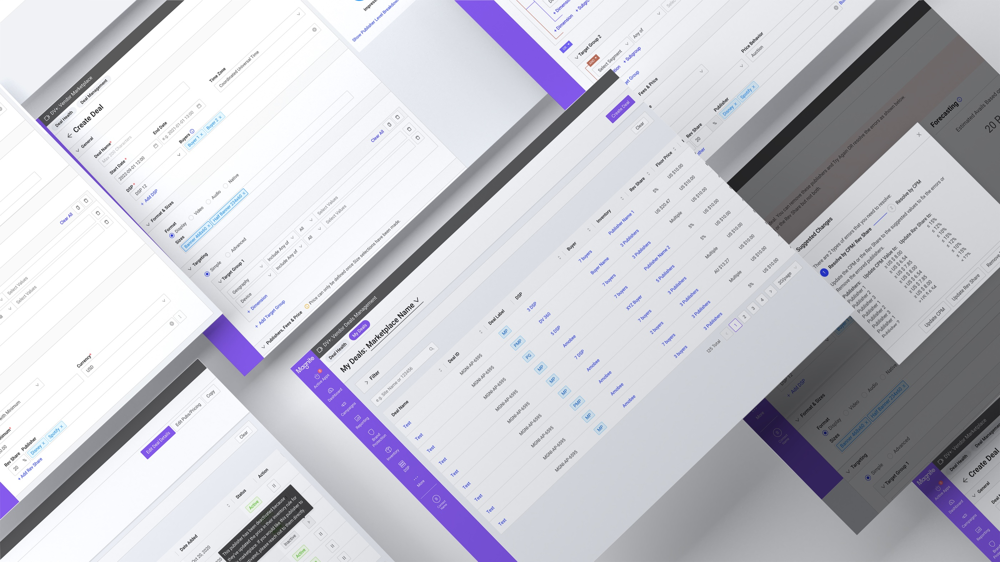
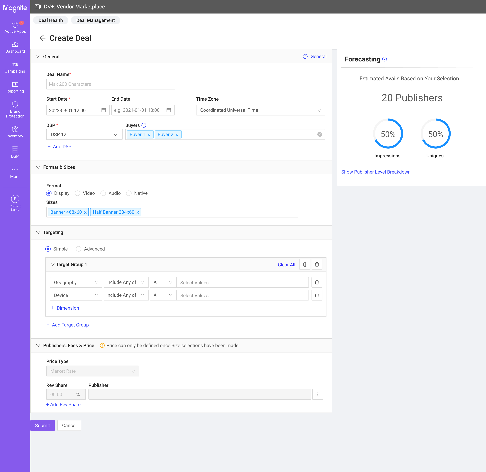
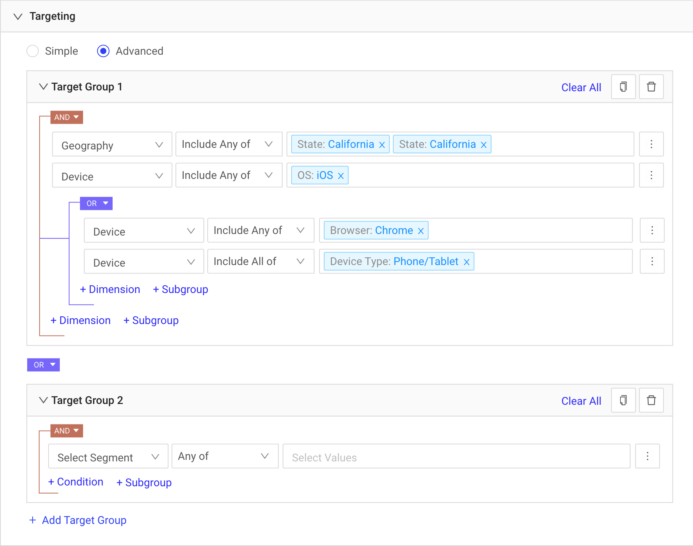
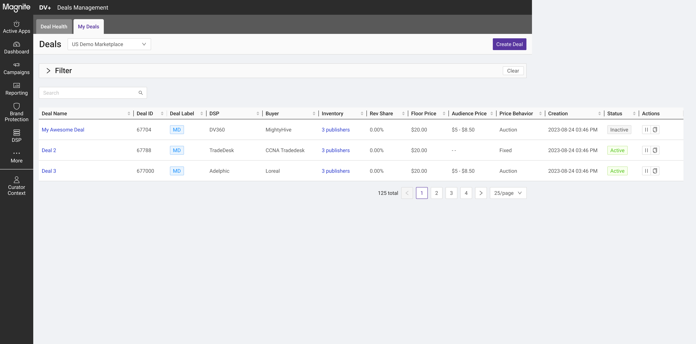
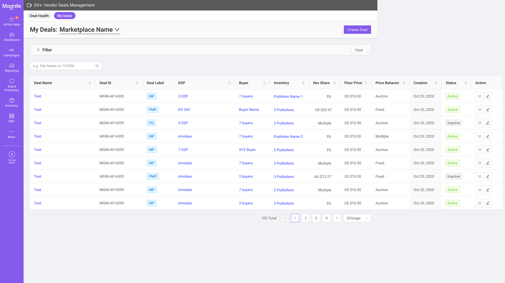
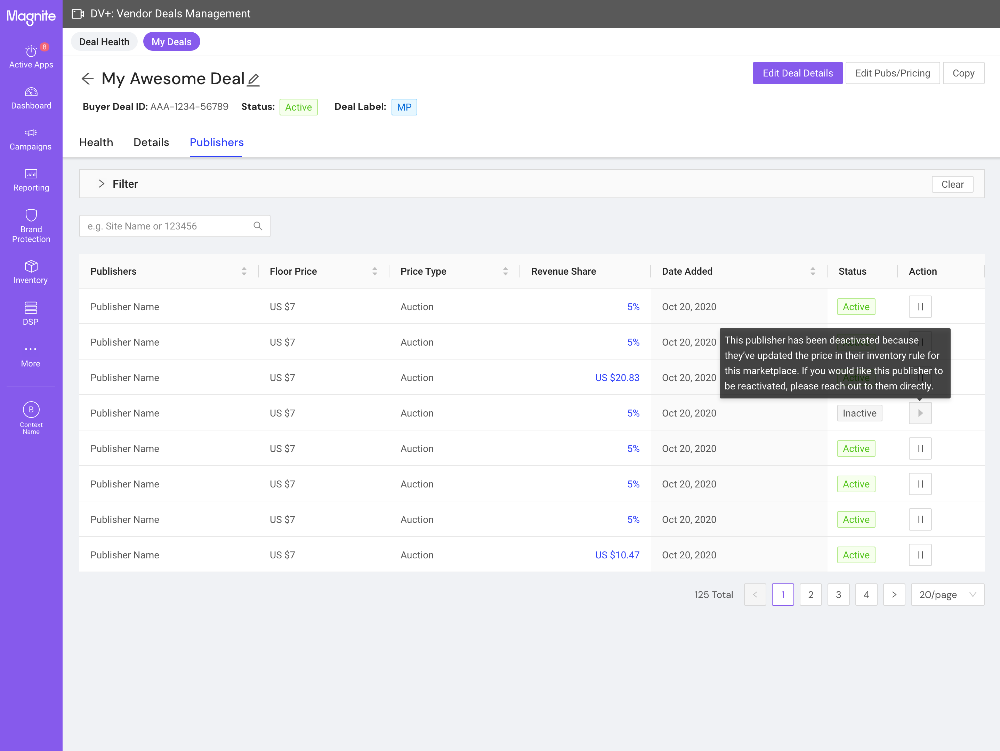

A net-new deal creation and management interface for Magnite's DV+ platform — replacing an API-only workflow with a self-serve UI that lets third-party marketplace operators configure, launch, and manage programmatic deals at scale. Shipped to production across three iteration cycles.

Magnite's DV+ is a sell-side advertising platform (SSP) for publishers — helping them monetize inventory across display, video, native, audio, and digital out-of-home (DOOH) formats. The Curator Marketplace extends this further, allowing third-party marketplace operators to build curated deals: packaging publisher inventory with their own targeting, pricing, and audience data, then making those deals available to DSPs and buyers.
Before this project, configuring a curated deal required direct API access or manual intervention by Magnite's internal teams. There was no UI. Third-party operators — buyers, publishers, DSPs, creative agencies, sales houses, audience data companies — had to work through workarounds that didn't scale. Multiple operators had explicitly asked for a self-serve interface. This project was the answer.
The primary users of Curator Deals Management are third-party marketplace operators — entities permitted to build and manage curated deals on publisher inventory. This spans a diverse set of business types: buyers, publishers, DSPs, creative agencies, sales houses, and audience data companies. Their technical sophistication varies, but they share a common need: to configure deals independently, without requiring Magnite to intervene on their behalf.
A secondary persona is internal Magnite users, who have access to additional administrative capabilities — including creating deals for Magnite-owned marketplaces and managing curator assignments.
Designing the deal creation flow meant resolving several competing tensions from the start. A deal involves a significant number of configurable parameters: marketplace selection, deal naming, DSP and buyer assignment, publisher targeting, inventory formats, pricing strategy, scheduling, and an advanced targeting tree that can span geography, DMP segments, and nested audience logic.
Three core tensions shaped the design problem:
Adding to the complexity: operators can choose from multiple pricing strategies when configuring a deal, each with different implications for how the pricing fields behave and what validation is required. The UI had to present these options clearly enough that operators could select the right one without misunderstanding the downstream financial implications — while also enforcing system-level pricing constraints without exposing internal fee logic.
The research finding was unambiguous: operators don't follow a linear path. The single-page form with collapsible sections — General, Format & Sizes, Targeting — let users jump to any part of the deal at any time, save partial configurations as drafts, and return without losing context. No back buttons, no losing progress on step 3 to change something on step 1.
Collapsible sections kept the page manageable without hiding required fields behind pagination. Each section could be independently expanded or collapsed without affecting the rest of the form state.

The Forecasting panel was a product requirement — it shows a 7-day estimated summary of impressions, uniques, and viewability based on the operator's current publisher selection. The design decision was where to put it.
I placed it in a fixed right-side panel rather than inline below the targeting section. The reason: the forecasting numbers update as operators interact with the publisher selection — not just the targeting fields. Keeping it in a persistent sidebar meant the estimates were always in view regardless of which section the operator was working in or how far they'd scrolled. An inline placement would have buried it during General or Format setup, defeating the purpose of live feedback.
Targeting complexity varies significantly across operator types. To accommodate both straightforward deals and complex multi-condition setups, the form offers a Simple mode and an Advanced mode — toggled from the same section without leaving the page.
Advanced targeting uses an AND/OR logic tree that can nest geography, DMP segment conditions, and audience logic across multiple groups. We already had an established component pattern for this, but user testing showed operators losing track of which conditions belonged to which group when trees became complex. I refined the visual hierarchy — indentation, border styling, and badge placement on AND/OR nodes — to make the group structure scannable at a glance without reading every condition.

Deal creation was only part of the problem. Operators also needed to manage deals after launch — editing pricing without disrupting targeting, cloning successful deals for rapid scaling, and resolving validation errors (such as publisher pricing floor conflicts) without abandoning the deal entirely.
Editing was split into two distinct modes: one for deal details (general settings, formats, targeting) and one for publishers and pricing (CPM, revenue share, publisher additions/removals). This separation prevented a common mistake — inadvertently changing pricing while intending to update targeting — and made each edit surface more focused. The copy flow pre-populated all fields from the original deal, enabling operators to spin up variations quickly.
The first version established the foundational deal creation and management flows: Deal Health, Deal Listing, Create Deal, Deal Details. The single-page form and persistent forecasting panel were validated by early users. PM Kelsey Davey worked closely through this cycle — from initial mocks to launch — and the product was well received, particularly by operators who had been waiting for a self-serve alternative to the API workflow.

A second round of user research uncovered gaps in the product. Several of these were already on the roadmap — the research confirmed that the prioritization was correct rather than revealing surprises. This cycle used design annotations to surface specific interaction questions (like action button ordering and edit entry points) for structured team review before implementation.
The second user study confirmed what we already knew — it wasn't a surprise, it was validation that our roadmap was correctly prioritized.
— Reflection on the iteration process
Cycle 2 — annotated for team review
Cycle 3 — shipped version
Following the core launch, Marketplace Management and bulk upload capabilities were added to the surface. This expanded Curator Deals Management from a deal creation tool into a broader marketplace operations platform. The Deal Details view was refined with clearer section hierarchy and updated action placements to support the new administrative workflows brought in from Cycle 3 features.

Curator Deals Management shipped to production and is live today. The platform replaced a manual, API-dependent workflow with a self-serve UI that third-party marketplace operators can use directly — without Magnite's involvement in each deal configuration. The DV+ Marketplace overall contributed to a 114% increase in ad spend, with the deal creation surface at the core of that growth.
Post-launch iterations added Marketplace Management, bulk upload, and expanded administrative capabilities — features that extended the original scope without requiring structural changes to the creation flow. This validated the architecture: the single-page form was flexible enough to absorb new functionality without a redesign.